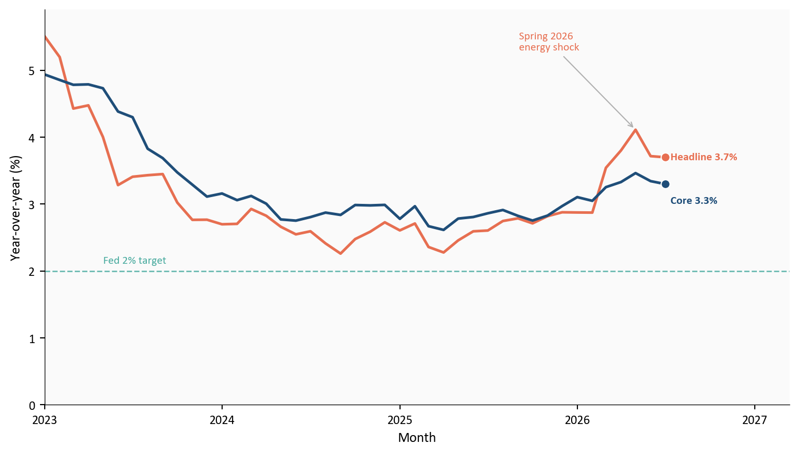
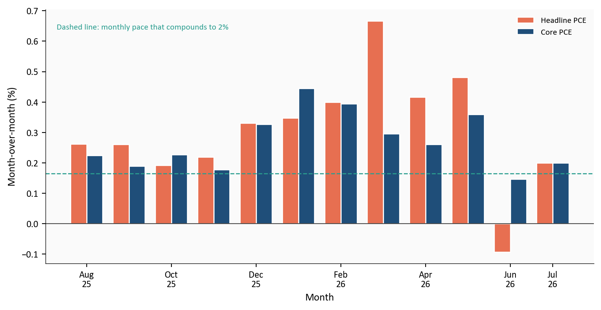
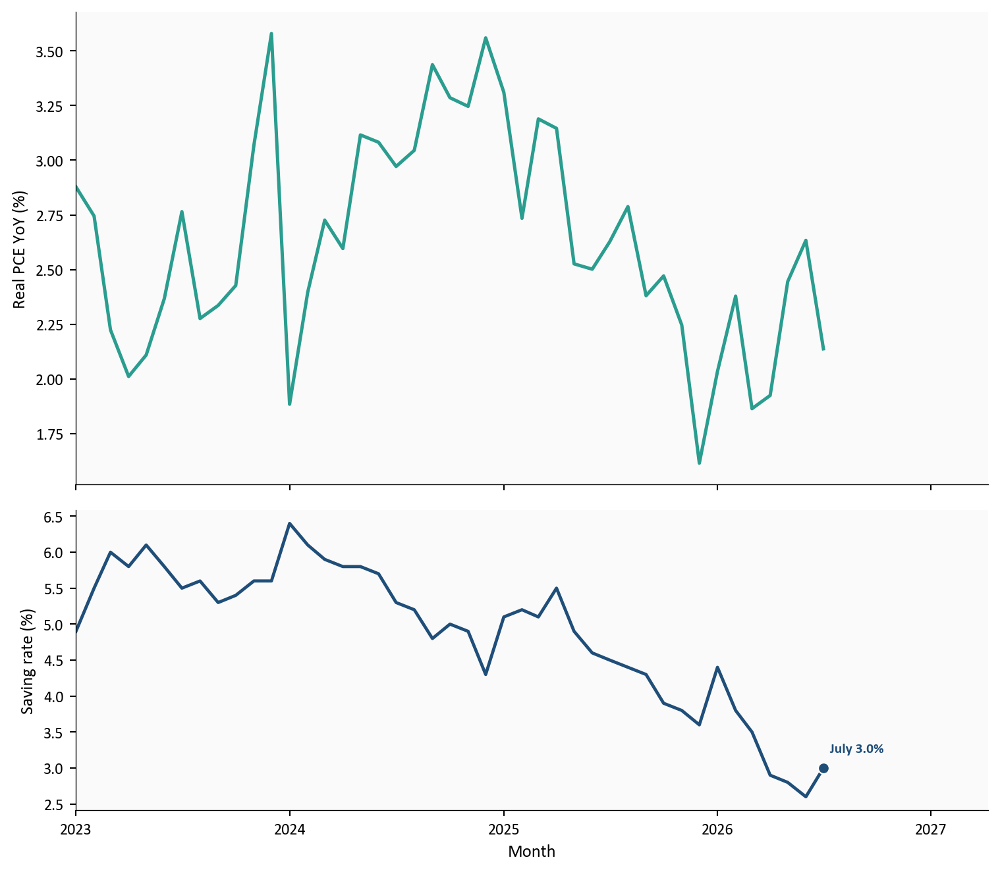
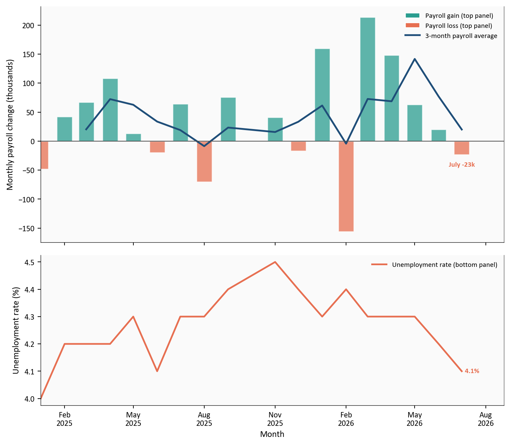
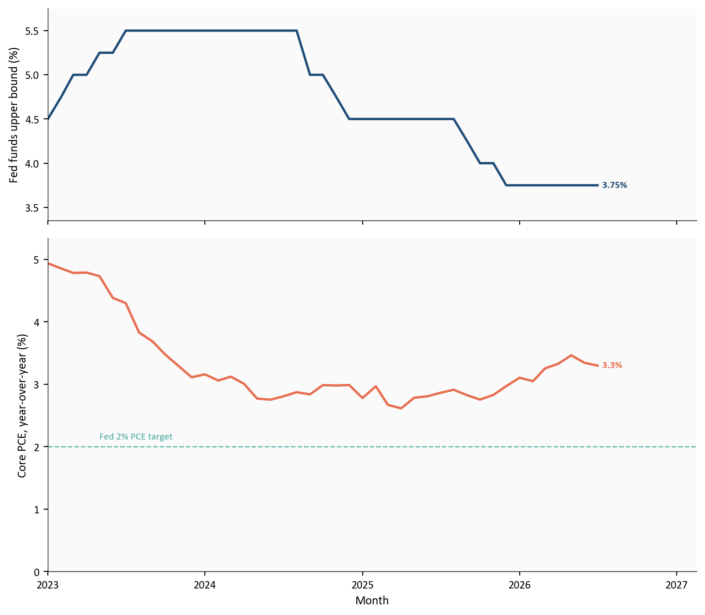

Headline PCE
3.7%
y/y | m/m +0.2%
Core PCE
3.3%
y/y | m/m +0.2%
Real spending
+$1.3 bn
volume m/m, under 0.1%
Saving rate
3.0%
of disposable income
BEA Personal Income and Outlays | July 2026 | released 8/26/2026
Yoram Gilboa
August 28, 2026
Personal Consumption Expenditures (PCE) are what households spend on goods and services. July headline PCE stayed at 3.7% year over year, unchanged from June. Core PCE, which excludes food and energy, stayed at 3.3%. Real spending was essentially flat.
Expand any chart block for the Python. Run from this post folder: 01_fetch_data.py, then 02_clean_data.py, then 03_visualizations.py, then 04_compute_stats.py. FRED series and the BEA release are listed under Methodology.
Rest the pointer on short names such as PCE or BEA to see the full phrase.
Personal Consumption Expenditures are what households spend on goods and services. The PCE price index tracks those prices. Core PCE excludes food and energy. Disposable personal income, or DPI, is income after taxes. The personal saving rate is saving as a share of DPI.
The Federal Reserve’s dual mandate is maximum employment and stable prices. The Fed’s 2% inflation goal is defined on PCE, not on the Consumer Price Index (CPI). CPI is built by the Bureau of Labor Statistics from an urban consumer basket. PCE is built by the BEA from a broader set of spending, including more services, and it updates weights with actual spending shares. That is why a CPI print and a PCE print for the same month can differ without either series being wrong.
The funds rate is a nominal rate, before inflation. The real policy rate, written r, is that same overnight rate after inflation. r* is a different number: an estimate of where r would sit if policy were neither adding demand nor taking it away. If r sat at r*, cheap credit would not be pushing inflation higher, and expensive credit would not be squeezing hiring. Nobody prints r* the way the BEA prints PCE. Staffs and markets estimate it; this post does not.
BEA Personal Income and Outlays | July 2026 | released 8/26/2026
The Bureau of Economic Analysis (BEA) is the federal statistical agency that measures US income and spending. Its July report showed that the price index the Federal Reserve targets rose +0.2% from June. Core PCE also rose +0.2%. Two days later Chair Warsh opened Jackson Hole with that print still on the table. The 9/15/2026-9/16/2026 FOMC meeting is next. This post stays with the tables.
The third card is a quantity, not a price. The BEA said the inflation-adjusted volume of household spending, often called real spending or real PCE, rose 1.3 billion dollars in July. That is under 0.1% from June, so the card treats the month as essentially flat even though the dollar change is not zero.
Personal income rose +0.4% in July, and disposable personal income rose +0.5%. Current-dollar PCE rose +0.2%, or 36.3 billion dollars, as services gained 86.2 billion and goods fell 49.9 billion. Personal saving was 3.0% of DPI.
The Q2 GDP report is the demand backdrop for this print. The funds target is 3.50% to 3.75%. The July FOMC minutes show the Committee held 9-3, with 3 dissents preferring a 25 basis-point increase. July payrolls fell -23k and unemployment was 4.1%. In the July CPI and PPI report, headline CPI rose +0.1% on the month and 3.4% year over year. Core CPI rose +0.2% and 2.5%, while PPI final demand was unchanged on the month.
Year-over-year headline PCE stayed at 3.7%, the same as June, while core PCE stayed at 3.3%. July’s monthly headline and core prints were both +0.2%. June’s softer headline month did not pull the yearly rate down.
Headline inflation peaked at 4.1% during the spring energy spike. The Fed’s 2% goal is a PCE target. CPI looked cooler in July because the Bureau of Labor Statistics and the BEA use different baskets and weights.
# YoY means this month versus the same month last year. Rate columns come
# from scripts/02_clean_data.py. Starting at zero keeps the 2% line from
# looking like the floor of the chart.
plot = df.loc["2023-01-01":, ["pce_headline_yoy", "pce_core_yoy"]].dropna()
fig, ax = plt.subplots(figsize=(8.0, 4.6))
ax.plot(plot.index, plot["pce_headline_yoy"], color=COLORS["headline"], linewidth=1.9)
ax.plot(plot.index, plot["pce_core_yoy"], color=COLORS["core"], linewidth=1.9)
ax.axhline(2.0, color=COLORS["target"], linestyle="--", linewidth=1.0, alpha=0.7)
ax.text(plot.index[4], 2.12, "Fed 2% target", color=COLORS["target"], fontsize=8, alpha=0.85)
shock = pd.Timestamp("2026-05-01")
if shock in plot.index:
ax.annotate(
"Spring 2026\nenergy shock",
xy=(shock, float(plot.loc[shock, "pce_headline_yoy"])),
xytext=(shock - pd.Timedelta(days=240), float(plot["pce_headline_yoy"].max()) - 0.2),
fontsize=8,
color=COLORS["headline"],
arrowprops=dict(arrowstyle="->", color=COLORS["light"], lw=0.8),
bbox=dict(facecolor="#fafafa", edgecolor="none", alpha=0.9, pad=2.0),
zorder=5,
)
last = plot.iloc[-1]
ax.scatter(plot.index[-1], last["pce_headline_yoy"], s=40, color=COLORS["headline"],
edgecolors="white", linewidth=0.8, zorder=5)
ax.scatter(plot.index[-1], last["pce_core_yoy"], s=40, color=COLORS["core"],
edgecolors="white", linewidth=0.8, zorder=5)
ax.text(plot.index[-1], last["pce_headline_yoy"],
f" Headline {last['pce_headline_yoy']:.1f}%",
color=COLORS["headline"], fontsize=8, fontweight="bold", va="center")
ax.text(plot.index[-1], last["pce_core_yoy"] - 0.18,
f" Core {last['pce_core_yoy']:.1f}%",
color=COLORS["core"], fontsize=8, fontweight="bold", va="top")
extend_xlim(ax, plot.index, 0.20)
y_top = float(plot[["pce_headline_yoy", "pce_core_yoy"]].max().max()) + 0.4
ax.set_ylim(0, y_top)
ax.set_ylabel("Year-over-year (%)")
ax.set_xlabel("Month")
ax.xaxis.set_major_locator(mdates.YearLocator())
ax.xaxis.set_major_formatter(mdates.DateFormatter("%Y"))
plt.tight_layout()
fig.savefig(FIG_DIR / "pce-headline-core-yoy.png", dpi=150, bbox_inches="tight")
Source: BEA via FRED series PCEPI and PCEPILFE.
Prices are still rising faster than the Fed wants. July did not change that yearly picture, even after the spring energy spike faded.
A yearly rate can hide a friendly month. June headline PCE prices fell -0.1%. July went back to +0.2% for both headline and core.
A useful benchmark is the monthly pace that compounds to 2% over a year, about 0.2% a month. July’s 0.2% prints sit above that line. One month above the line does not lock in a high yearly rate, and one month below it (June headline) does not lock in 2%. The last 12 months show several readings well above that dashed path, then June’s dip, then July back above it.
plot = df.loc[:, ["pce_headline_mom", "pce_core_mom"]].dropna().iloc[-12:]
x = np.arange(len(plot))
width = 0.38
fig, ax = plt.subplots(figsize=(8.0, 4.2))
ax.bar(x - width / 2, plot["pce_headline_mom"], width=width,
color=COLORS["headline"], edgecolor="white", label="Headline PCE")
ax.bar(x + width / 2, plot["pce_core_mom"], width=width,
color=COLORS["core"], edgecolor="white", label="Core PCE")
ax.axhline(TWO_PCT_MONTHLY, color=COLORS["target"], linestyle="--", linewidth=1.0)
ax.text(
0.02, 0.92,
"Dashed line: monthly pace that compounds to 2%",
color=COLORS["target"], fontsize=8, transform=ax.transAxes,
)
ax.axhline(0, color=COLORS["neutral"], linewidth=0.8)
tick_idx = list(range(0, len(plot), 2))
if (len(plot) - 1) not in tick_idx:
tick_idx.append(len(plot) - 1)
ax.set_xticks([x[i] for i in tick_idx])
ax.set_xticklabels([plot.index[i].strftime("%b\n%y") for i in tick_idx])
ax.set_ylabel("Month-over-month (%)")
ax.set_xlabel("Month")
ax.legend(loc="upper right", frameon=False, fontsize=8)
plt.tight_layout()
fig.savefig(FIG_DIR / "pce-monthly-pace.png", dpi=150, bbox_inches="tight")
Source: BEA via FRED series PCEPI and PCEPILFE.
June’s headline decline did not persist. July put both measures back above the monthly pace that compounds to 2%, a benchmark rather than a forecast.
“Real spending” means the volume of goods and services households bought after stripping out price changes. If prices rise 0.2% and households spend 0.2% more dollars, real spending is unchanged: they paid more for the same basket. The third card’s 1.3 billion dollars is that volume change in July, which the BEA also described as under 0.1% month over month.
Compared with a year earlier, real spending was still 2.1% higher. That yearly gap can stay positive even when the latest month adds almost nothing. The two facts are not a contradiction. They answer different questions: the yearly number asks whether the level of consumption is above last summer; the monthly number asks whether households added more volume in July itself. July’s answer to the second question is no. That is why this print is not an overheating boom in volumes. It is a pause in the quantity of spending while prices keep rising.
The saving rate was 3.0% of disposable income, up from 2.6% in June but still a thin cushion.
plot = df.loc["2023-01-01":, ["real_pce_yoy", "saving_rate"]].dropna()
fig, (ax1, ax2) = plt.subplots(
2, 1, figsize=(8.0, 7.0), sharex=True, gridspec_kw={"height_ratios": [2.2, 1.4]}
)
ax1.plot(plot.index, plot["real_pce_yoy"], color=COLORS["target"], linewidth=1.9)
ax2.plot(plot.index, plot["saving_rate"], color=COLORS["core"], linewidth=1.8)
july = pd.Timestamp("2026-07-01")
if july in plot.index:
ax2.scatter(july, plot.loc[july, "saving_rate"], s=40, color=COLORS["core"],
edgecolors="white", linewidth=0.8, zorder=5)
ax2.text(july, plot.loc[july, "saving_rate"] + 0.18,
f" July {plot.loc[july, 'saving_rate']:.1f}%",
color=COLORS["core"], fontsize=8, fontweight="bold", va="bottom")
extend_xlim(ax1, plot.index, 0.22)
ax1.set_ylabel("Real PCE YoY (%)")
ax2.set_ylabel("Saving rate (%)")
ax2.set_xlabel("Month")
ax2.xaxis.set_major_locator(mdates.YearLocator())
ax2.xaxis.set_major_formatter(mdates.DateFormatter("%Y"))
plt.tight_layout()
fig.savefig(FIG_DIR / "real-pce-saving.png", dpi=150, bbox_inches="tight")
Source: FRED series DPCERA3M086SBEA (real PCE) and PSAVERT (personal saving rate); July saving rate aligned to the BEA release.
The dual mandate also covers employment. Nonfarm payrolls fell -23k in July while unemployment held at 4.1%. That mix can look calmer than it is. The unemployment rate is jobless people divided by the labor force, not by the whole adult population. If people leave the labor force, the denominator shrinks and the rate can stay near 4.1% even as fewer adults are working or looking. The participation rate, the share of adults in the labor force, was 61.4% in July, versus 62.1% in January (-0.7 percentage points). The jobs print is therefore a weaker market and a smaller labor force, not a clean all-clear on the employment side of the mandate.
# Two panels keep payroll thousands off the unemployment-rate scale.
# The July payroll label sits under the orange bar with no extra marker.
plot = df.loc["2025-01-01":"2026-07-01", ["payroll_change_k", "unrate"]].dropna()
payroll_average = plot["payroll_change_k"].rolling(3).mean()
fig, (ax1, ax2) = plt.subplots(
2, 1, figsize=(8.0, 7.0), sharex=True, gridspec_kw={"height_ratios": [2.2, 1.4]}
)
bar_colors = [COLORS["target"] if v >= 0 else COLORS["headline"] for v in plot["payroll_change_k"]]
ax1.bar(plot.index, plot["payroll_change_k"], width=20, color=bar_colors, alpha=0.75, edgecolor="white")
ax1.plot(plot.index, payroll_average, color=COLORS["core"], linewidth=2.0)
ax1.axhline(0, color=COLORS["neutral"], linewidth=0.8)
ax2.plot(plot.index, plot["unrate"], color=COLORS["headline"], linewidth=1.9)
july = pd.Timestamp("2026-07-01")
if july in plot.index:
val = float(plot.loc[july, "payroll_change_k"])
un = float(plot.loc[july, "unrate"])
pad = max(12.0, abs(plot["payroll_change_k"]).max() * 0.06)
ax1.text(july, val - pad, f"July {val:+.0f}k",
color=COLORS["headline"], fontsize=8, fontweight="bold",
ha="center", va="top", zorder=6)
ax2.text(july, un, f" {un:.1f}%", color=COLORS["headline"],
fontsize=8, fontweight="bold", va="center")
extend_xlim(ax1, plot.index, 0.10)
ax1.set_ylabel("Monthly payroll change (thousands)")
ax2.set_ylabel("Unemployment rate (%)")
ax2.set_xlabel("Month")
ax1.yaxis.set_major_formatter(ticker.StrMethodFormatter("{x:,.0f}"))
ax1.legend(
handles=[
Patch(facecolor=COLORS["target"], edgecolor="white", label="Payroll gain (top panel)"),
Patch(facecolor=COLORS["headline"], edgecolor="white", label="Payroll loss (top panel)"),
plt.Line2D([0], [0], color=COLORS["core"], linewidth=2.0, label="3-month payroll average"),
],
loc="upper right",
frameon=False,
fontsize=8,
)
ax2.legend(
handles=[plt.Line2D([0], [0], color=COLORS["headline"], linewidth=1.9,
label="Unemployment rate (bottom panel)")],
loc="upper right",
frameon=False,
fontsize=8,
)
solid_right_spine(ax1)
solid_right_spine(ax2)
ax2.xaxis.set_major_locator(mdates.MonthLocator(interval=3))
ax2.xaxis.set_major_formatter(mdates.DateFormatter("%b\n%Y"))
plt.tight_layout()
fig.savefig(FIG_DIR / "labor-dashboard.png", dpi=150, bbox_inches="tight")
Source: Bureau of Labor Statistics via FRED series PAYEMS, UNRATE, and CIVPART.
The FOMC does not pick a single overnight rate. It sets a target range for the federal funds rate, the overnight interest rate banks charge one another to borrow reserves. The current range is 3.50% to 3.75%. That 25-basis-point band is the instruction: overnight trading is supposed to stay inside it. The Fed uses its overnight facilities to keep the effective rate in the band. The chart plots the upper edge of that range, 3.75%.
Core PCE is 3.3% year over year. That is how fast prices in the core household basket rose over twelve months. It is a price change, not an interest rate. Putting the funds ceiling and core inflation in one subtracted “gap” makes them look like a single tightness score. They are not.
plot = df.loc["2023-01-01":, ["fed_target_upper", "pce_core_yoy"]].dropna()
fig, (ax1, ax2) = plt.subplots(
2, 1, figsize=(8.0, 7.0), sharex=True, gridspec_kw={"height_ratios": [1.4, 2.2]}
)
ax1.plot(plot.index, plot["fed_target_upper"], color=COLORS["core"], linewidth=1.9)
ax2.plot(plot.index, plot["pce_core_yoy"], color=COLORS["headline"], linewidth=1.9)
ax2.axhline(2.0, color=COLORS["target"], linestyle="--", linewidth=1.0, alpha=0.7)
ax2.text(plot.index[4], 2.12, "Fed 2% PCE target", color=COLORS["target"], fontsize=8, alpha=0.85)
last = plot.iloc[-1]
ax1.text(plot.index[-1], last["fed_target_upper"],
f" {last['fed_target_upper']:.2f}%",
color=COLORS["core"], fontsize=8, fontweight="bold", va="center")
ax2.text(plot.index[-1], last["pce_core_yoy"],
f" {last['pce_core_yoy']:.1f}%",
color=COLORS["headline"], fontsize=8, fontweight="bold", va="center")
extend_xlim(ax1, plot.index, 0.18)
ax1.set_ylabel("Fed funds upper bound (%)")
ax2.set_ylabel("Core PCE, year-over-year (%)")
ax2.set_xlabel("Month")
funds = plot["fed_target_upper"]
ax1.set_ylim(float(funds.min()) - 0.40, float(funds.max()) + 0.25)
ax2.set_ylim(0, float(plot["pce_core_yoy"].max()) + 0.4)
ax2.xaxis.set_major_locator(mdates.YearLocator())
ax2.xaxis.set_major_formatter(mdates.DateFormatter("%Y"))
plt.tight_layout()
fig.savefig(FIG_DIR / "fed-funds-core-pce.png", dpi=150, bbox_inches="tight")
Source: Federal Reserve (DFEDTARU) and BEA via FRED (PCEPILFE).
A policy rate in the mid-3s and core inflation in the mid-3s can coexist without telling you whether policy is tight or easy. Tight or easy is a comparison of two different real rates. The real policy rate, r, is the funds rate after inflation. r* is an estimate of where r would sit if policy were neither adding demand nor taking it away. If r sat at r*, monetary policy would not be pushing the economy to heat up or cool down. If r is above r*, policy is pulling demand down. If r is below r*, it is adding demand. r* is not in any official table. It has to be estimated, and estimates disagree. This chart does not produce r or r*, and it also leaves out financial conditions and the rest of the dual mandate.
Chair Warsh’s prepared Jackson Hole remarks kept PCE at the center of the price-stability discussion without turning this post into a speech recap:
“And while this summer’s PCE and CPI readings were better than expected, they do not tell me that underlying trends have meaningfully improved.”
That line matches the tables: July brought no further cooldown in the yearly rates.
Yearly headline and core PCE did not cool. They held at 3.7% and 3.3%. June’s -0.1% headline dip did not persist; July was +0.2% on both headline and core. Payrolls fell -23k while unemployment held at 4.1%, with participation lower than in January.
Fed path. The dual mandate is split. July PCE alone did not clear the inflation side, while softer payrolls and a smaller labor force raised the employment concern. This post makes no rate call. As of 8/29/2026, Polymarket priced a September hold at 54.5% and a 25 basis-point increase at 43.5%. Those are wagers, not a forecast from this analysis.
Households. Nominal income and DPI rose, but real spending was flat and the saving rate is only 3.0% of disposable income. That is a thin buffer if hours or prices worsen.
Investors. This is not a new inflation spike, and it is not an easing signal. June’s monthly dip now has a counter-observation.
The 9/4/2026 employment report is the next labor checkpoint, including participation as well as the unemployment rate. The 9/15/2026-9/16/2026 FOMC includes new projections, and August PCE follows on 9/30/2026. Watch whether monthly core inflation remains near 0.2%. One month will not set policy by itself.
Monthly PCE estimates are seasonally adjusted and revise, while yearly rates move slowly. FRED carried the July series used here, so no history was reconstructed. Dollar figures come from the BEA release. The policy-rate and core-inflation panels are not an r* estimate. Polymarket odds move by the hour and are recorded as of 8/29/2026. The official Warsh quotation is context rather than evidence about the tables. One month does not determine September policy.
| Series or table | Use in this post | Source |
|---|---|---|
| PCEPI | Headline PCE price index, m/m and y/y | FRED / BEA |
| PCEPILFE | Core PCE price index | FRED |
| DPCERA3M086SBEA | Real PCE quantity index | FRED |
| PSAVERT | Personal saving rate | FRED |
| PAYEMS, UNRATE, CIVPART | Payrolls, unemployment, participation | BLS via FRED |
| DFEDTARU | Fed funds target upper bound | FRED |
| Personal Income and Outlays | Official July dollar and percent prints | BEA July 2026 PIO |
| Fed Decision in September? | Hold vs 25 bp hike odds | Polymarket |
| Jackson Hole remarks | One short blockquote | Warsh remarks |
The Python code for each chart is in this post. Expand a chart block to see it. The pipeline runs in numeric order from the post folder:
scripts/01_fetch_data.py downloads the FRED series, including CIVPART for participation.scripts/02_clean_data.py computes month-over-month and year-over-year changes. Official July BEA rates are pinned to the release if FRED rounding differs.scripts/03_visualizations.py writes the five PNGs under figures/.scripts/04_compute_stats.py writes every prose and card value to stats/summary_stats.json.pandas handles the tables and matplotlib draws the figures. Official BEA dollar figures that FRED does not publish as standalone monthly series are entered from the Personal Income and Outlays release and marked in 04_compute_stats.py.
Data current as of 8/29/2026. BEA Personal Income and Outlays for July 2026 was released 8/26/2026. Chair Warsh’s Jackson Hole remarks were delivered 8/28/2026.